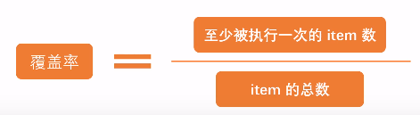
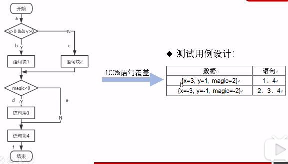
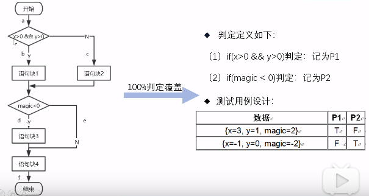
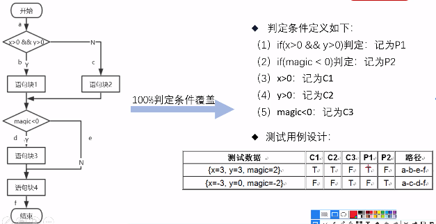
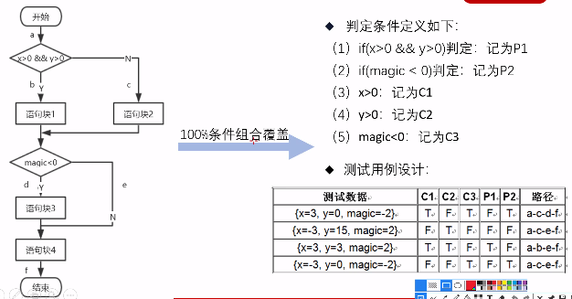
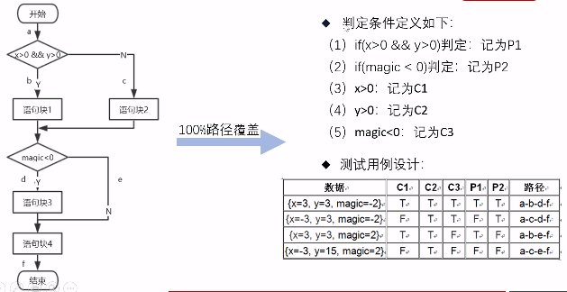
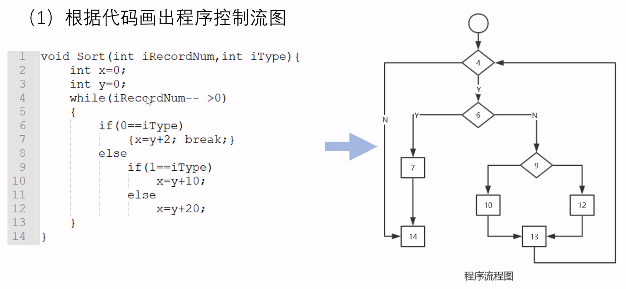
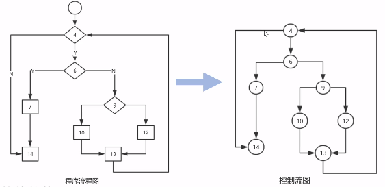
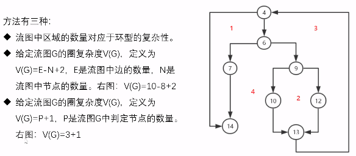
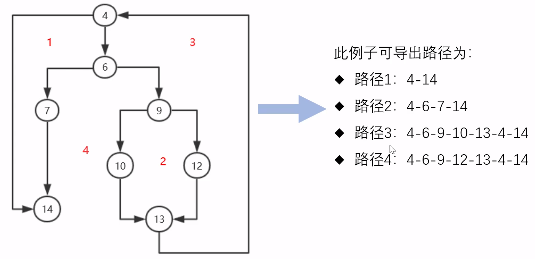

黑盒测试与白盒测试的基本概念
接触软件测试一般从黑盒开始，然后白盒，本文记录一下自己学习时做的笔记
黑盒测试主要有等价类划分法、边界值分析法、错误推测法、因果图法、判定表驱动法、正交实验设计法、功能图法、场景图法等
优点:比较容易入门。不需要了解程序内部的代码及实现；与软件的内部实现无关； 从用户角度出发，能很容易的知道用户会用到哪些功能，
会遇到哪些问题；基于软件开发文档，所以也能知道软件实现了文档中的哪些功能
缺点： 以手工测试为主，工作效率比较低。不了解代码的话，难以精确的衡量测试点，甚至连边界值都找的不是很正确。
且不可能覆盖所有的代码，覆盖率较低
白盒测试主要有语句覆盖、判定覆盖、判定条件覆盖、条件组合覆盖、路径覆盖、基本路径覆盖
优点：优点就是可以通过代码可以更加清楚的了解软件的内部结构和运行机制，更好的设计测试用例；
帮助软件测试人员增大代码的覆盖率，提高代码的质量，发现代码中隐藏的问题。
缺点：一般情况下对测试人员要求很高，不但要求能够阅读代码，还要有一定的算法分析能力。程序运行会有很多不同的路径，不可能测试所有的运行路径；
测试基于代码，只能测试开发人员做的对不对，而不能知道设计的正确与否，可能会漏掉一些功能需求；系统庞大时，测试开销会非常大。
下文主要对以上方法进行详细介绍
1.等价类划分法
做加法器功能测试时，测试了1+1,1+2,1+3,1+4之后，还有必要做1+5,1+6吗？能否放心的认为它们是正确的？
设计步骤和原则
2.在输入条件规定了输入值的集合或者规定了 “必须如何” 的条件的情况下，可以确立一个有效等价类和一个无效等价类
3.在输入条件是一个布尔量的情况下，可确定一个有效等价类和一个无效等价类
4.在规定了输入数据的一组值（假定n个），并且程序要对每一个输入值分别处理 的情况下，可确立 n个有效等价类和一个无效等价类
5.在规定了输入数据 必须遵守的规则的情况下，可确立一个有效等价类（符合规则）和若干个无效等价类(从不同角度违反规则）
6.在确知已划分的等价类中，各元素在程序处理中的方式不同的情况下，则应再将该等价类 划分为更小的等价类
例：
1.一个文本框规定，输入字符个数为6~18位。
2.一个有效等价类：输入范围内的个数，如输入10位（6<10<18）
3.两个无效等价类：小于6；大于18
4.请输入11位的手机号
5.11位就是有效，不是11位就是无效
6.布尔量：表示真或假
7.例如：登录中要输入的用户名和密码
8.例如：用户名要求6~18位，由字母、数字。下划线组成：字母区分大小写，以大写字母开头
2.边界值分析法
1.如果输入条件规定了值的范围 ，应取刚到达这个范围边界的值，以及刚刚超越这个范围边界的值作为测试输入数据
2.如果输入条件规定了值的个数 ，则用最大个数、最小个数、比最小个数少1，比最大个数多1的数作为测试数据
3.分析规格说明，找出其它可能的边界条件
3.错误推测法
4.因果图法
1.因果图法是一种描述多种输入条件组合的测试方法
2.根据输入条件的组合、约束关系和输出条件的因果关系，分析输入条件的各种组合情况，从而生成测试用例的方法
3.它适合于检查输入条件涉及的各种组合情况
原因与结果的关系
1.恒等。原因A成立，则B一定成立
2.非。原因A成立，B一定不成立
3.或。A、B、C三者只要有一个成立，结果D一定成立
4.与。原因A、B、C都成立时，结果D才会成立
原因之间的约束
1.互斥。不同时为1，即A、B、C中至多只能有一个1
2.包含。至少有一个1，即A、B、C中不能同时为0
3.唯一。表示A、B、C中有且只有一个1
4.要求。表示若A为1，则B必需为1
5.屏蔽。若A为1，则B必需为0
5.判定表驱动法
6.正交实验设计法
7.功能图法
8.场景图法
白盒测试
1.概念和特点
优点： 代码覆盖率高
缺点：
1.覆盖所有代码难度大
2.业务功能可能覆盖不全
测试开销大
白盒设计方法
静态设计方法
1.桌面检查：开发人员写完后自己不测给其它开发人员检查，也就是互查，A检查B，B检查A，但也要遵循一定的开发规范、编码规则
2.代码审查：组织会议，由代码作者来讲解他的代码 的逻辑结构，大概分哪几个部分，有哪几个函数，一行一行的讲解，由开发 人员和测试人员共同参与，较正式，更关心结构和规范上的问题
3.代码走查：会议形式，与会人提前准备好测试数据，会议过程中输入这些数据，人工查看数据的走向 更关心功能实现的问题
4.代码扫描工具：只能解决编码规范上规则的问题，对于功能实现，结构是否合理仍需要人工进行检查，不能完全替代以上三种方法
动态设计方法
逻辑覆盖法：是通过对程序逻辑结构的遍历实现程序的覆盖 语句覆盖
语句覆盖：执行测试用例，使得程序中每条语句至少被执行一次例：下面的流程图中有四条语句

局限性：六种逻辑覆盖标准中，语句覆盖标准最弱，即使语句覆盖率达到100%，也不能准确判断运算中的逻辑关系错误
判定覆盖
判定覆盖：也叫分支覆盖，设计测试用例，使得程序中的每个判断的“真”和“假”都至少被执行一次。即：程序中的每个分支 至少执行一次例：下图两个判断，四个分支

只要满足了判定覆盖，一定能满足语句覆盖
局限性：判定覆盖会忽略条件中取或（or）的情况
判定条件覆盖
判定条件覆盖：设计测试用例，使得测试程序中的每个判断本身的判定结果（真假）至少满足一次，
每个逻辑条件的可能值（真假）也至少被满足一次，即同时满足100%的判定覆盖和100%条件覆盖的标准
例：下图两个判断，三个条件，所以判定结果4，条件结果6

满足判定条件覆盖标准一定满足条件覆盖、判定覆盖和语句覆盖
局限性：判定条件覆盖会忽略条件中取或（or）的情况
条件组合覆盖
条件组合覆盖：设计测试用例，使得被测程序中的每个判定中条件结果的所有可能组合至少执行一次
例：下图两个判断，三个条件（判定1有2个条件，判定2有1个条件），
判定1的条件组合为4个，判定2的条件组合为2个

条件组合覆盖能满足判定覆盖、条件覆盖、判定条件覆盖，也就包括语句覆盖
局限性：条件组合覆盖不能保证所有的路径都被执行到
路径覆盖
路径覆盖：设计测试用例，覆盖程序中所有可能的路径
例：4条路径

路径覆盖可以对程序进行彻底的测试，比前面五种覆盖率都广
局限性：可能并不能满足条件覆盖，也就不能满足条件组合覆盖
基本路径覆盖
在程序控制流图的基础上，通过分析程序的环路复杂性，导出基本可执行路径集合，从而设计测试用例

（1）根据代码画出程序流程图：

数字代表要执行的代码所在的行数
（2）计算程序的环路复杂性：

计算环路复杂度是为了确认导出的可执行路径数量是没有错的
（3）导出可执行路径：

(4)设计测试用例
小结
1.要应用于单元测试阶段
2.先静态，后动态
3.设计用例一般使用基本路径测试，重点模块使用多种覆盖率标准
相关链接：